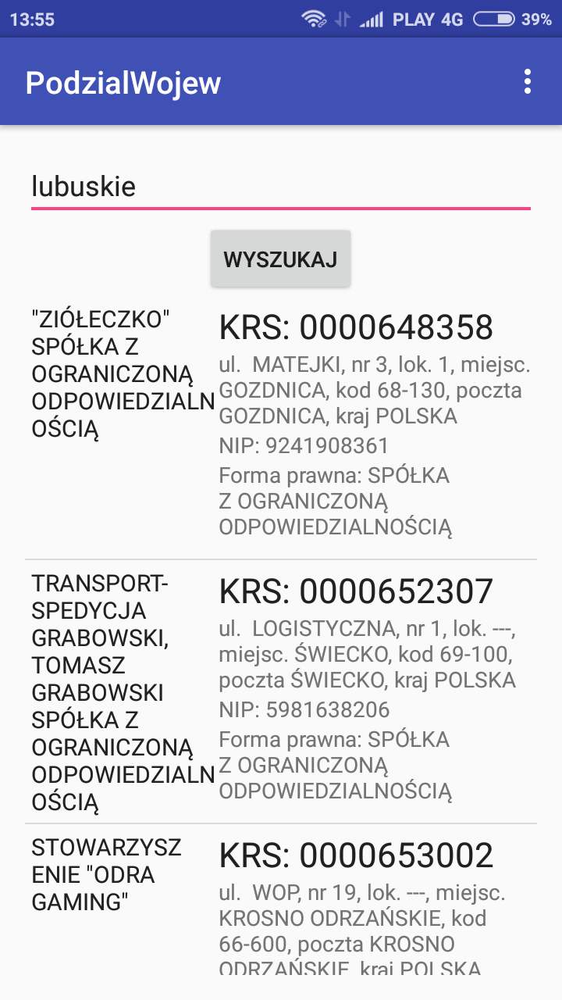

Dokumentacja aplikacji KRS 2.0
1. Podstawowe zaoenia Krajowego Rejestru Sdowego
Podstawowym zaoeniem KRS-u jest wzmocnienie pewnoci obrotu poprzez stworzenie jednolitego, centralnego rejestru, ktry wywouje okrelone skutki prawne zarwno dla przedsibiorcw jak i uczestnikw obrotu.
Z perspektywy wadz pastwowych KRS jest filtrem, ktry ma przynajmniej z zaoenia, nie dopuci do dziaania nieuczciwych przedsibiorcw czy zakadania fikcyjnych spek. Ponadto sprzyja rozwojowi gospodarczemu zapewniajc przejrzysto informacji dotyczcych podmiotw biorcych udzia w obrocie gospodarczym i rwne warunki dostpu do rejestru.
Jeeli chodzi o przedsibiorcw to poprzez wpis do rejestru zyskuj swj statut, a dane dotyczce ich spki s dostpne publicznie. Pojawienie si podmiotu w wyszukiwarce KRS wiadczy o tym, e speni okrelone prawem wymagania i jestemy w stanie sprawdzi, midzy innymi: jego NIP, REGON (jeeli wczeniej ich nie posiadalimy), dokadny adres, dat wpisu do KRS, organy reprezentacji, przedmiot dziaalnoci. Ponadto moemy sprawdzi informacj w dziale 4 na temat zalegoci i wierzytelnoci tego podmiotu i zweryfikowa czy chcemy wsppracowa z danym przedsibiorc, bd podj u niego zatrudnienie.
Informacje dodatkowe, ktrych nie sprawdzimy w KRS, a ktre mog okaza si przydatne przy weryfikacji danego podmiotu s dostpne na stronie: http://przeswietl.pl Moemy tam sprawdzi m.in wszystkie firmy znajdujce si pod danym adresem, powizania jakie ma dana firma, czy histori jej dziaalnoci.
Gwne zasady KRS
Zgodnie z teori profesora Kidyby mona wyrni pi zasad w oparciu, o ktre funkcjonuje KRS :
1. Jawno dziki tej zasadzie kady ma prawo dostpu do danych zawartych w rejestrze za porednictwem Centralnej Informacji oraz ma prawo otrzymywa drog elektroniczn powiadczone odpisy, wycigi, zawiadczenia i informacje z Rejestru.
2. Domniemanie znajomoci treci wpisu ta zasada wie si z zasad jawnoci. Oznacza, e od dnia ogoszenia wpisu w Monitorze Sdowym nie mog zasania si nieznajomoci ogoszonych wpisw.
3. Domniemanie prawdziwoci i zasady dobrej wiary jest to do prosta i logiczna zasada, ktra pozwala mi zakada, e dane ktre znajduj w rejestrze s prawdziwe.
4. Kady podmiot zarejestrowany w KRS otrzymuje swj unikatowy numer ( za wyjtkiem wpisu do rejestru dunikw niewypacalnych).
(Joanna Kosterska - Absolwentka prawa Uniwersytetu Wrocawskiego)
KRS suy take jako skuteczne narzdzie windykacyjne. W szczeglnoci dziki informacjom zawartym w KRS moemy ustali, czy okrelona osoba jest wsplnikiem spki, jej akcjonariuszem lub wchodzi w skad organw takiego podmiotu. Dane te stanowi cenne rdo informacji dla wierzyciela. Ponadto w przypadku, gdy dunik nie ma majtku lub go skutecznie ukrywa, istnieje moliwo wpisania takiego dunika do rejestru dunikw niewypacalnych co take ma silne oddziaywanie na takiego dunika.
(Jarosaw Olejarz SerwisPrawa.pl)
2. Opis aplikacji
KRS 2.0 jest aplikacj umoliwiajca wywietlanie szczegowych danych dotyczcych organizacji zarejestrowanych w Krajowym Rejestrze Sdowym przedstawionych poniej.
- Wywietlanie organizacji zarejestrowanych w KRS (z podziaem na wojewdztwa)
- Wywietlanie informacji o organizacji (NIP, KRS, adres, nazw, itp.)
- Podzia na typ formy prawnej (organizacja biznesowa, pozarzdowa, samodzielne publiczne zakady opieki zdrowotnej)
-
- Wywietlanie listy zaoycieli organizacji
- Wywietlanie listy osb penicych nadzr nad organizacj
- Wywietlanie listy wsplnikw firmy
- Monitorowanie emisji akcji organizacji
- Wywietlanie listy firm, w ktrych organizacja ma udziay
- Wywietlanie listy oddziaw firmy
3. Dziaanie i obsuga aplikacji
Po uruchomieniu aplikacji oczom uytkownika ukazuje si ekran startowy na ktrym znajduje si sze przyciskw kryjcych gwne opcje programu.

Opcja "WYSZUKIWARKA" pozwala na odnajdywania firm za pomoc ich nazwy lub numeru KRS


Opcja "AKCJE I UDZIAY" pozwala na pozyskanie informacji dotyczcy ch AKCJI UDZIAW oraz ODZDZIAW wyszukiwanego przedsibiorstwa.

Aby wywietli dane informacje naley wyszuka numer ID interesujcego nas przedsibiorstwa poprzez wpisanie jego nazwy i kliknicie przycisku "GENERUJ ID" a nastpnie przepisanie wywietlonego numeru ID we wskazane pole.


Opcja "Wsplnicy i nadzorcy" jest rozszeeniem opcji "AKCJE I UDZIAY" wic pozyskanie danych informacji odbywa si w sposb analogiczny.

Opcja "PODZIA FORMA PRAWNA" wywietla przedsibiorstwa o danym typie formy prawnej, w podziale na:
1 - Organizacje biznesowe
2 - Organizacje pozarzdowe
3 - Samodzielne publiczne zakady opieki zdrowotnej

Opcja "PODZIA NA WOJEWDZTWA" pozwala na wycignicie informacji dotyczcej firm zarejestrowanych w danym wojewdztwie.

Jeeli uytkownik aplikacji wprowadzi nieodpowiedni format/fraz/parametr zostanie o tym poinformowany komunikatem.
Ostatnia opcja aplikacji przedstawia informacje o autorach projektu.
4. Opis klas
4.1 Klasa MainActivity

Klasa ta zawiera nastpujce metody:
void akcje(View) - przekierowywuje do klasy Dane
void autorzy(View) - przekierowywuje do klasy Autorzy
void ludzie(View) - przekierowywuje do klasy Lista
void podzialF(View) - przekierowywuje do klasy PodzialForma
void podzialW(View) - przekierowywuje do klasy PodzialWojew
void wysz(View) - przekierowywuje do klasy Wyszukiwarka
void onCreate(Bundle)
boolean onCreateOptionsMenu(Menu)
boolean onOptionsItemSelected(MenuItem)
4.2 Klasa Autorzy

Klasa ta zawiera nastpujce metody:
void onCreate(Bundle)
boolean onCreateOptionsMenu(Menu)
boolean onOptionsItemSelected(MenuItem)
4.3 Klasa Dane

Klasa ta zawiera nastpujce metody:
void onCreate(Bundle)
boolean onCreateOptionsMenu(Menu)
boolean onOptionsItemSelected(MenuItem)
Oraz pola:
Button btn - przycisk sucy do wywietlenia akcji firmy
Button oddzialy - przycisk sucy do wywietlenia oddziaw firmy
Button udzialy - przycisk sucy do wywietlenia udziaw firmy
Button gen - przycisk sucy do wywietlenia ID firmy
EditText wysz - pole pobierajce tekst od uytkownika
EditText znaj - pole pobierajce tekst od uytkownika
ListView firmy - lista firm
Klasa zawiera nastpujce podklasy:
JSONTask - odpowiada za pobieranie ID firmy
JSONTaskAkcje - odpowiada za pobieranie akcji firmy
JSONTaskOddzialy - odpowiada za pobieranie oddziaw firmy
JSONTaskUdzialy - odpowiada za pobieranie udziaw firmy
KRSAdapter - odpowiada za wywietlenie ID firmy
KRSAdapterAkcje - odpowiada za wywietlenie akcji firmy
KRSAdapterOddzialy - odpowiada za wywietlenie oddziaw firmy
KRSAdapterUdzialy - odpowiada za wywietlenie udziaw firmy
4.4 Klasa Lista

Klasa ta zawiera nastpujce metody:
void onCreate(Bundle)
boolean onCreateOptionsMenu(Menu)
boolean onOptionsItemSelected(MenuItem)
Oraz pola:
Button zalo - przycisk sucy do wywietlenia zalozycieli firmy
Button nadz - przycisk sucy do wywietlenia nadzorcw firmy
Button wsp - przycisk sucy do wywietlenia wsplnikw firmy
Button gen - przycisk sucy do wywietlenia ID firmy
EditText wysz - pole pobierajce tekst od uytkownika
EditText znaj - pole pobierajce tekst od uytkownika
ListView firmy - lista firm
Klasa zawiera nastpujce podklasy:
JSONTask - odpowiada za pobieranie ID firmy
JSONTaskZalozyciele - odpowiada za pobieranie nazwisk zaoycieli firmy
JSONTaskNadzorcy - odpowiada za pobieranie nazwisk nadzorcw firmy
JSONTaskWspolnicy - odpowiada za pobieranie nazwisk wsplnikw firmy
KRSAdapter - odpowiada za wywietlenie ID firmy
KRSAdapterZalozyciele - odpowiada za wywietlenie nazwisk zaoycieli firmy
KRSAdapterNadzorcy - odpowiada za wywietlenie nazwisk nadzorcw firmy
KRSAdapterWspolnicy - odpowiada za wywietlenie nazwisk wsplnikw firmy
4.5 Klasa PodzialForma

Klasa ta zawiera nastpujce metody:
Klasa ta zawiera nastpujce metody:
void onCreate(Bundle)
boolean onCreateOptionsMenu(Menu)
boolean onOptionsItemSelected(MenuItem)
Oraz pola:
Button btn - przycisk sucy do wywietlenia firm o danym typie formy prawnej
Button btnNext - przycisk sucy do wywietlenia kolejnej strony
EditText wysz - pole pobierajce tekst od uytkownika
ListView firmy - lista firm
Klasa zawiera nastpujce podklasy:
JSONTask - odpowiada za pobieranie danych firmy
KRSAdapter - odpowiada za wywietlenie danych firmy
4.5 Klasa PodzialWojew

Klasa ta zawiera nastpujce metody:
void onCreate(Bundle)
boolean onCreateOptionsMenu(Menu)
boolean onOptionsItemSelected(MenuItem)
Oraz pola:
Button btn - przycisk sucy do wywietlenia firm w danym wojewdztwie
EditText wysz - pole pobierajce tekst od uytkownika
ListView firmy - lista firm
Klasa zawiera nastpujce podklasy:
JSONTask - odpowiada za pobieranie danych firmy
KRSAdapter - odpowiada za wywietlenie danych firmy
4.5 Klasa Wyszukiwarka
Klasa ta zawiera nastpujce metody:
void onCreate(Bundle)
boolean onCreateOptionsMenu(Menu)
boolean onOptionsItemSelected(MenuItem)
Oraz pola:
Button btn - przycisk sucy do wywietlenia firm podanej nazwie
Button btnK - przycisk sucy do wywietlenia firmy o podanym numerze KRS
EditText wysz - pole pobierajce tekst od uytkownika
ListView firmy - lista firm
Klasa zawiera nastpujce podklasy:
JSONTask - odpowiada za pobieranie danych firmy
KRSAdapter - odpowiada za wywietlenie danych firmy
4.6 Klasa ModelFirmy

Klasa ta zawiera nastpujce metody:
String get() - pobiera dane
void set(String) - ustawia dane